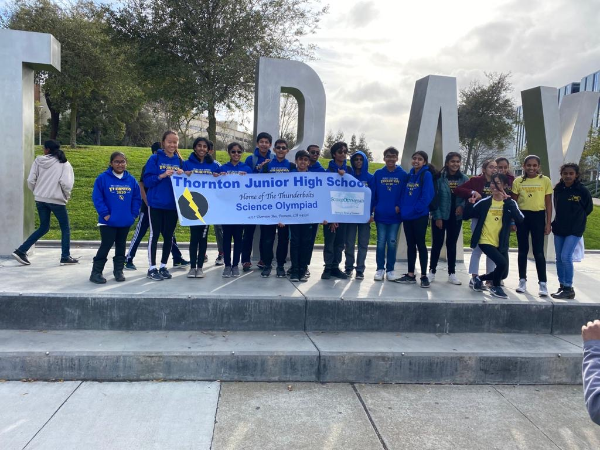
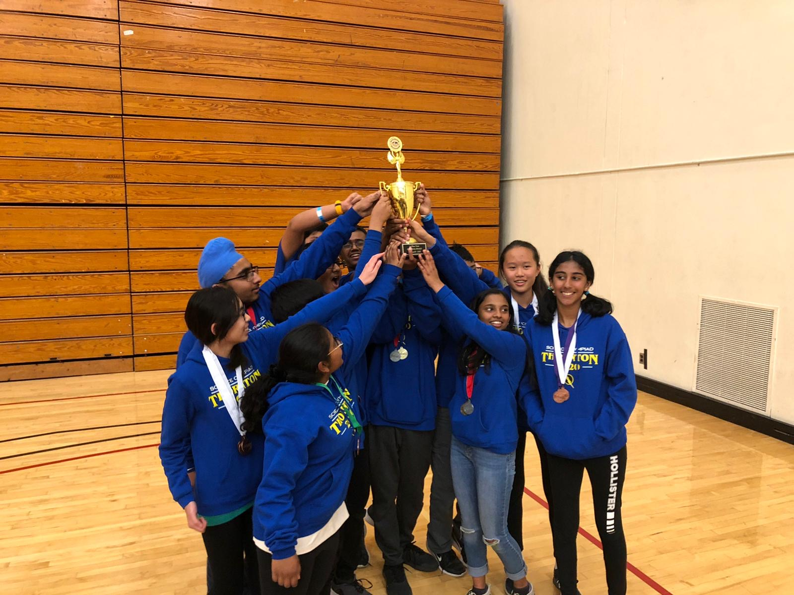
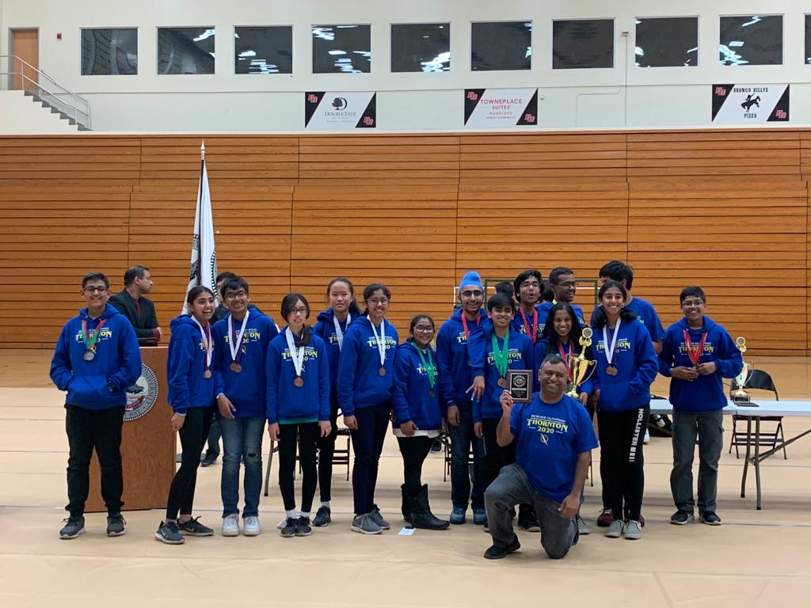

In my 7th grade year at Thornton Junior High School, I passed the Science Olympiad entry test and was placed on the Thornton Blue Team. From there on, I participated in the Regionals and was reaccepted onto the Thornton Blue Team the following year.
 These were the topics I studied during my time as a 7th grader on the Thornton Yellow Team.
These were the topics I studied when I was reaccepted as an 8th grader on the Thornton Blue Team.
Here are my results from Science Olympiad. Each person's individual scores count towards the final score of the team. The lower the number, the better it is for the team. That means that if someone got a very bad place, like 30, it would drag the entire team down, which shows how much of Science Olympiad is based on teamwork.
During 7th grade, it was my first time taking part in Science Olympiad. At the Regionals, I actually did better than most of my team. I received 3 medals: 4th place for Mystery Architecture, 4th place for Fossils, and 6th place for Heredity. My team, Yellow team, finished overall in 3rd place. The top 3 teams get to advance to state, but luck was not on our side. The Thornton Blue Team managed to get first that year and only one team from each school is allowed to advance, so naturally, my team was disqualified and another school got to go.
During my 8th grade year at Thornton, for my previous achievements on the Thornton Yellow Team, I was one of the people picked to join the blue team. The blue team is supposed to be Thornton's best team, so we had a lot of great expectations. At the Regionals, I received only 2 medals: 3rd place for Ornithology, 3rd place for Fossils, and 8th place for EL Glider. My team was given a very nice surprise when we were announced the first place winners of the Regionals. We were very excited for States. However, tragedy struck as both States and Nationals were cancelled because of the coronavirus.